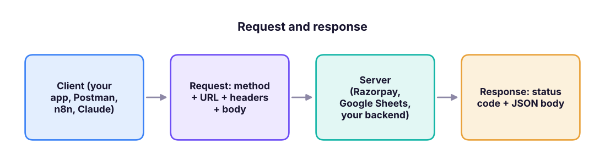
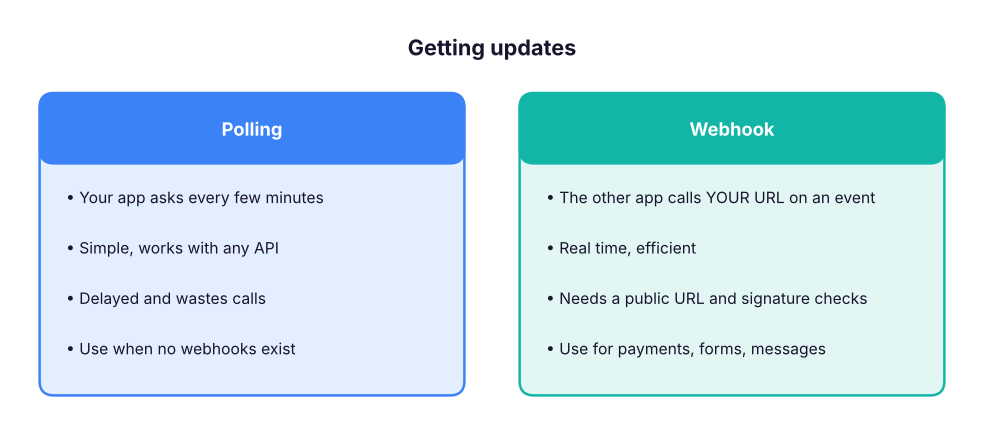

APIs Without Code: How Apps Talk, REST, JSON, Authentication, Webhooks and Postman for PMs and BAs
Understand APIs well enough to write requirements, read documentation, test endpoints and design integrations without writing code. Learn requests and responses, REST verbs and status codes, JSON, authentication (API keys, OAuth 2.0), rate limits and pagination, webhooks vs polling, and how to try any API in Postman, then turn it into a PRD-ready integration spec.
- Explain what an API, an endpoint, a request and a response are, with real examples
- Read API documentation and JSON, and know what each HTTP method and status code means
- Choose between API keys and OAuth, and between webhooks and polling
- Test an API in Postman without code and save a collection for your team
- Write an integration section of a PRD with data mapping, errors and limits
What an API is
An API (Application Programming Interface) is a contract that lets one app ask another for data or actions. When the Swiggy app shows a restaurant's live wait time, it calls an API; when Zomato sends you an SMS, it calls an SMS provider's API; when your payment goes through, the app calls Razorpay's API.

The parts of a request
| Part | Example | Meaning |
|---|---|---|
| Method | GET, POST, PUT/PATCH, DELETE |
Read, create, update, delete |
| Base URL + path (endpoint) | https://api.example.com/v1/orders/123 |
Which resource |
| Query parameters | ?status=paid&limit=20 |
Filters, sorting, paging |
| Headers | Authorization: Bearer sk_live_…, Content-Type: application/json |
Who you are, what format |
| Body | {"amount": 49900, "currency": "INR"} |
Data you send (POST/PUT/PATCH) |
Status codes every PM should know
| Code | Meaning | What to put in the PRD |
|---|---|---|
| 200 OK / 201 Created | Success | Show the result / confirmation |
| 400 Bad Request | Invalid input | Field-level validation message |
| 401 Unauthorized / 403 Forbidden | Not logged in / not allowed | Ask to log in / hide the action |
| 404 Not Found | Resource does not exist | Friendly empty state |
| 409 Conflict | Duplicate or version clash | "Already exists" handling |
| 429 Too Many Requests | Rate limit hit | Retry later, queue, back-off |
| 500 / 502 / 503 | Server problem | Retry with back-off, show status, alert on-call |
JSON: the language of APIs
import json
response = '''{"order_id": "ORD-1029", "status": "paid", "amount": {"value": 49900, "currency": "INR"},
"customer": {"name": "Asha Rao", "city": "Pune"}, "items": [{"sku": "TSHIRT-M", "qty": 2}, {"sku": "CAP", "qty": 1}]}'''
order = json.loads(response)
print("Status:", order["status"])
print("Amount in rupees:", order["amount"]["value"] / 100) # amounts often come in paise
print("Items:", [f'{i["sku"]} x{i["qty"]}' for i in order["items"]])Status: paid Amount in rupees: 499.0 Items: ['TSHIRT-M x2', 'CAP x1']
Read JSON like a tree: { } is an object (named fields), [ ] is a list. order.amount.value is a path into the tree; tools like n8n, Make and Zapier let you click that path instead of typing it.
Authentication
| Method | How it works | Typical use |
|---|---|---|
| API key | A secret string in a header | Server-to-server, internal tools |
| Bearer token | A token in Authorization: Bearer … |
Most modern APIs |
| OAuth 2.0 | User clicks "Allow"; the app gets a scoped, expiring token | "Sign in with Google", Gmail/Slack integrations |
| Webhook signature | The sender signs each event with a shared secret | Verifying Razorpay/Stripe/GitHub events |
Keys belong in a secrets manager or the tool's credential store, never in documents, screenshots, chats or client-side code. Rotate a key immediately if it leaks.
Rate limits, pagination and idempotency
- Rate limits: e.g. 100 requests per minute; plan batches and back-off.
- Pagination: results arrive in pages (
page=2,cursor=abc, anextlink); integrations must follow every page. - Idempotency: payment APIs accept an
Idempotency-Keyso a retried request does not charge twice.
import math
records, page_size, limit_per_min = 12_500, 100, 60
calls = math.ceil(records / page_size)
print(f"{calls} calls needed; at {limit_per_min}/min the first full sync takes about {math.ceil(calls / limit_per_min)} minutes")125 calls needed; at 60/min the first full sync takes about 3 minutes
Webhooks vs polling

Try an API in Postman (no code)
- Install Postman (or use the web app) and create a free workspace.
- New → HTTP request. Method
GET, URLhttps://api.github.com/repos/n8n-io/n8n. - Send. Read the status (200), time and the JSON body:
stargazers_count,forks_count. - Save it to a collection; add an environment with variables such as
{{base_url}}and{{token}}. - Try a
POSTagainst a test API (for example a sandbox from your payment provider) with a JSON body, and read the 201 or 400 responses. - Use Code (the
</>icon) to see the same call as cURL: you can paste cURL into n8n's HTTP Request node.
Other free ways to explore APIs: the browser address bar for simple GETs, Hoppscotch, the Swagger/OpenAPI "Try it out" pages many APIs publish, and asking Claude to explain an API reference page.
Writing the integration section of a PRD
| Section | What to write |
|---|---|
| Goal | "Create a Freshdesk ticket when a premium customer submits a complaint form" |
| Systems and endpoints | Form webhook → POST /api/v2/tickets |
| Data mapping | form.email → requester_email; form.issue → description; plan → tag |
| Auth | Freshdesk API key stored in the integration platform's credentials |
| Triggers and timing | On submit (webhook), under 1 minute |
| Errors and retries | 3 retries with back-off; on failure alert #support-ops |
| Limits | 1,000 calls/hour; expected 200/day |
| Security and privacy | No card data; mask phone numbers in logs; DPDP consent captured on the form |
| Acceptance criteria | Ticket created with correct fields in 95% of tests; duplicates prevented by form ID |
Summary
- An API call is a method + URL + headers + body; the answer is a status code + JSON.
- Know the common status codes and what the user should see for each.
- Use API keys or OAuth, respect rate limits, follow pagination and use idempotency for payments.
- Prefer webhooks for real-time events; test everything in Postman before you spec it.
1. Which method creates a new record?
2. An integration receives 429 responses. What does it mean?
3. Which authentication lets a user grant an app scoped access to their Gmail?
4. When is a webhook better than polling?
5. Why do payment APIs support idempotency keys?
6. In JSON, what does [ ] represent?
Pick a public API (GitHub, a weather API or your company's sandbox). In Postman, save three requests (one GET with a query parameter, one POST, one that returns an error) in a collection. Then write the integration section of a PRD for "send a WhatsApp confirmation when an order is paid" using the table above.
Show solution
A good answer names the trigger (payment webhook), the endpoint of the WhatsApp provider, a data mapping table, credentials storage, retry and alert rules, the rate limit, the template approval requirement for WhatsApp business messages, consent, and testable acceptance criteria.
Q: Explain an API to a non-technical stakeholder. It is a menu and a waiter: the menu (documentation) lists what you can ask for, you place an order (request), and the kitchen (server) returns your dish (response) or a reason it cannot.
Q: REST vs webhooks? REST is request-response: you ask when you want data. Webhooks are event notifications: the other system calls you when something happens.
Q: What would you check before committing to a third-party API? Coverage of the needed endpoints, authentication, rate limits and pricing, uptime/SLA and status page, webhooks, sandbox, data residency and privacy, versioning and deprecation policy, and support.
Q: How do you write acceptance criteria for an integration? Specify the trigger, the exact data mapping, success latency, error handling and retries, duplicates, logging, and measurable pass conditions in test and production.
Q: What is OpenAPI? A standard machine-readable description of a REST API (endpoints, parameters, schemas) used to generate docs, test pages, SDKs and tool definitions for AI agents.